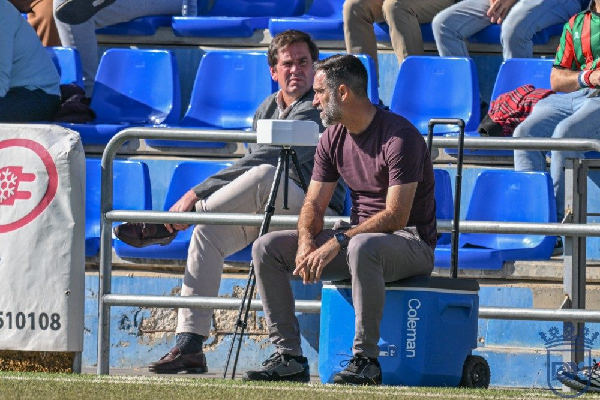

Abel Segovia, «superorgulloso» de un equipo que suple las bajas

Foto: Diario XerecistaEl entrenador del Xerez CD cree que el 0-2 ante el Atlético Central se quedó corto, destaca que el equipo cubrió cuatro bajas y elogia a los más de 1.000 aficionados que viajaron a Alcalá de Guadaíra.
Abel Segovia se marchó del Ciudad de Alcalá muy satisfecho con la quinta victoria consecutiva del Xerez CD. "Creo que hemos sido superiores de principio a fin", resumió el técnico, que solo puso un pero: el balón parado del rival, donde pidió "un poco más de calma" para no hacer faltas.
¿Mejor fuera que en casa?
El Xerez vuelve a sumar más puntos lejos de Chapín (11) que como local (10), como ya ocurrió en las temporadas anteriores. Segovia niega que el equipo se sienta más cómodo fuera: "A mí eso de fuera o dentro me da igual. El equipo tiene que ser siempre el mismo, un equipo reconocible, un equipo con identidad". Puso como ejemplo el partido ante el Ciudad de Lucena, "uno de los más completos" del equipo, que se perdió. Eso sí, "mientras más puntos saquemos fuera, mejor", porque en casa el Xerez va a ser "muy fuerte".
Doble lateral izquierdo para Salas
En el tramo final juntó en la banda izquierda a Chacartegui y a Salas, lo mismo que hizo la semana pasada en la derecha con Víctor López y Guille Campos. Segovia explicó que quería darle minutos a Salas porque está trabajando muy bien, y que pasó a Zelu a la otra banda.
Para lo que se ha visto, claro que es corto
Con más acierto, cree que el Xerez "habría matado el partido antes" y habría estado más tranquilo.
Teníamos cuatro bajas y lo han suplido perfectamente
Se declaró "superorgulloso" de cada jugador. En defensa solo repetía Chacartegui respecto al partido ante el Antoniano, y el equipo encadenó su tercera portería a cero.
Por eso no lo he quitado, porque solo le ha faltado el gol
El técnico cree que el delantero "se ha liberado" y espera que marque pronto, porque "sería una liberación para él".
Que vea que al final el trabajo tiene su recompensa
Víctor Isuskiza, que apenas había jugado desde la llegada de Segovia, tuvo minutos como premio: "Está entrenando muy bien, es muy profesional".
Para eso tenemos a cuatro o cinco centrales
El central, lesionado en el último entrenamiento, tendrá que hacerse pruebas: "Notó algo y no queríamos arriesgar con él".
Esto solo ha hecho empezar
Destacó el valor de ganar en Sanlúcar y en Alcalá, donde, según recordó, solo había ganado el Linares, el próximo rival: "El domingo, con nuestra gente, desde el primer minuto a por ellos".
Ver a tu gente cómo te anima, cómo te aprieta, es lo más
Agradeció el apoyo del millar de xerecistas que llenó la Preferencia y lanzó un reto: "Tenemos que conseguir este año llenar el campo, porque tenemos que conseguir cosas buenas".